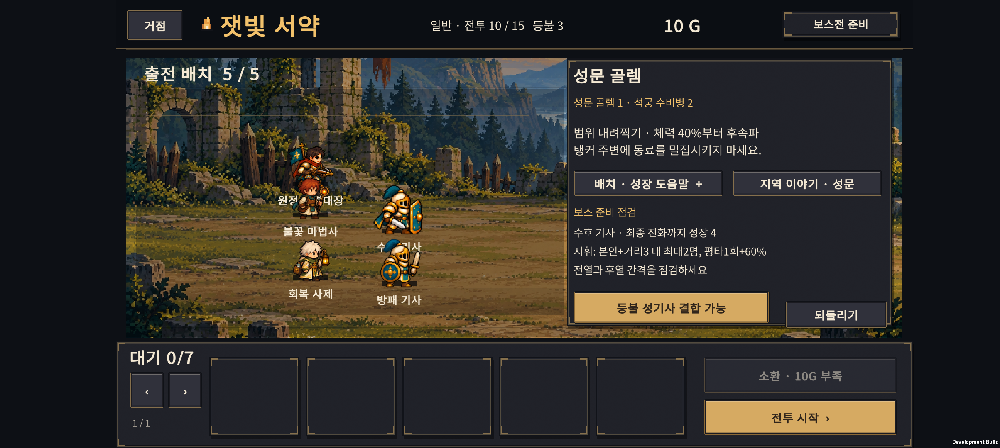
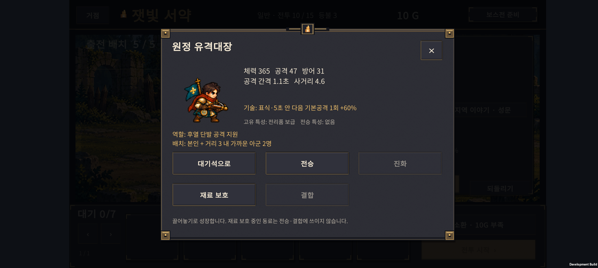

2026-10-24 · IGNIS: ASHEN OATH
일반전에서 성장 없이도 지나가던 구간의 적 체력·공격력을 조정하고, 보스 준비 화면에 현재 편성에 맞는 안내를 추가했다. 현재는 Normal 15전투이며 Hard는 준비 중이다. 이전 v0.27은 c4508de로 커밋했다.
1. 일반전이 쉬웠던 부분
기본 3명 유지, 기본 5명으로 인원만 확장, 분기 성장, 기사 최종 우선, H-02 결합의 다섯 고정 정책으로 1~15전투를 비교했다. 성장한 편성은 기존 성채·폐광 일반전에서 매우 높은 체력으로 승리했고, 기본 3명조차 4전투까지 통과했다. 따라서 초반부터 성장과 소환이 필요해지는 구간을 더 분명히 했다.
| 구간 | 반영 |
|---|---|
| 1~2 | 조작·소환 학습 구간으로 유지 |
| 3~4 | 졸개·정예의 체력과 공격력 상승. 인원 확장·첫 진화의 가치 강화 |
| 6~8 | 성채 보병·석궁병의 교전 압박 강화 |
| 9 | 이미 성장하지 않은 편성을 막는 정예전이라 유지 |
| 11~14 | 폐광 졸개·투척병·감독관 강화. 체력만 늘리지 않고 공격력도 함께 조정 |
| 5·10·15 | 보스와 호위의 기존 수치 유지 |
적 수·배치·공격 역할, 소환 비용·확률, 승리 보상, 아군 능력치·기술은 그대로다.
변경한 적 수치
아래 숫자는 체력 / 공격력, 화살표는 기존→현재다. 방어력·공격 주기·이동 속도는 바꾸지 않았다.
| 전투 | 근접 졸개 | 원거리 졸개 | 정예 |
|---|---|---|---|
| 3 | 150/17 → 175/20 | 125/19 → 150/23 | — |
| 4 | 145/22 → 165/26 | 100/25 → 120/28 | 340/38 → 400/42 |
| 6 | 240/20 → 320/27 | 150/16 → 190/22 | — |
| 7 | 260/25 → 320/33 | 160/24 → 200/30 | — |
| 8 | 260/28 → 300/34 | 180/25 → 215/31 | — |
| 11 | 300/26 → 420/36 | 200/22 → 270/30 | — |
| 12 | 360/30 → 480/40 | 230/25 → 300/34 | — |
| 13 | 400/33 → 520/44 | 260/28 → 330/38 | — |
| 14 | 420/35 → 500/44 | 270/31 → 330/38 | 850/45 → 950/50 |
같은 시드 1~40의 전후 비교
| 편성 | 전투 | 승리 수: 전 → 후 | 종료 시 아군 체력 비율: 전 → 후 |
|---|---|---|---|
| 기본 3명 유지 | 3 | 모두 승리 → 모두 승리 | 81% → 64% |
| 기본 3명 유지 | 4 | 모두 승리 → 모두 패배 | 5% → 0% |
| 기본 5명 유지 | 4 | 40 → 40 | 76% → 66% |
| 기본 5명 유지 | 8 | 40 → 25 | 48% → 22% |
| 기본 5명 유지 | 12 | 40 → 25 | 60% → 18% |
| 기본 5명 유지 | 13 | 25 → 0 | 22% → 0% |
| 분기 성장 | 8 | 40 → 40 | 96% → 87% |
| H-02 결합 정책 | 13 | 40 → 40 | 95% → 89% |
| H-02 결합 정책 | 14 | 40 → 40 | 93% → 87% |
기본 3명 정책은 소환을 하지 않아 시드가 바뀌어도 동일한 전투다. 이 행을 40개의 서로 다른 편성으로 해석하면 안 된다. 기본 5명 정책은 같은 시드의 실제 무작위 소환 결과를 사용한다.
별도 시드 4001~4040에서는 기본 3명이 4전투에서 모두 패배했고, 기본 5명은 8전투 30/40, 13전투 0/40이었다. 분기·기사 최종·H-02 성장 정책은 모든 일반전에서 40/40 승리했다. 이 성장 편성들의 34·69·1114전투는 평균 약 **8.417.4초**였다.
한계: 성장한 편성에는 여전히 여유가 있다. 특히 최종 사제가 있는 폐광 편성은 전투 종료 전에 회복해 95~100% 체력으로 끝나는 경우가 많다. 종료 체력만으로 전투 중 압박을 판단하거나 ‘난도 완성’이라고 결론 내리지 않는다. 이번은 성장하지 않아도 통과하던 구간과 성장한 부대의 차이를 만드는 첫 조정이다. 더 긴 전투나 체력만 큰 적으로 난도를 맞추지는 않았다.
측정은 고정 자동 정책이며 사람의 승률이 아니다. 패배 후에도 가상 승리 보상을 주어 후반 전투를 비교한다. wins는 해당 전투의 승리, reachWins는 처음부터 무패로 도달한 수다. 표의 종료 체력은 패배의 0도 포함한다. JSON의 meanSeconds는 승패 전체 평균이므로 패배가 늘며 짧아지는 값을 속도 개선으로 해석하지 않는다.
전 수치·1~40 · 반영 수치·1~40 · 반영 수치·별도 4001~4040
2. 보스 준비 화면
오른쪽 패널의 반복 조작 설명을, 보스전에서는 현재 편성을 읽는 세 줄 안내로 바꿨다. 기존 패턴 설명과 도움말 버튼은 유지한다.
- 출전 자리가 비고 대기 동료가 있으면 실제 인원을 알려준다.
- 출전 동료가 성장 조건을 충족했으면 분기·최종 진화 가능을 알려준다.
- 10전투 이후 기사가 아직 성장 중이면 다음 진화에 필요한 성장을 표시한다.
- 출전한 유격대장의 지휘 대상과 기본공격 강화도 안내한다.
- 성장·출전 변경·되돌리기 뒤 바로 갱신한다. 새로운 확인창이나 전투 시작 제한은 없다.
대기석의 동료를 출전자로 계산하거나 결합형에게 없는 최종 진화를 요구하지 않는다. 권장 편성을 강제하는 점수표도 아니다.

3. 빙결 추적자·유격대장 점검
기술이 발동하지 않는 결함은 확인되지 않았다. 빙결 추적자의 둔화는 이동 감속이며 골렘의 공격 주기를 늦추지 않는다. 유격대장 지휘는 지속 오라나 화살 추가 발사가 아니라 본인과 거리 3 안의 가까운 아군 최대 2명이 5초 이내 사용하는 다음 기본공격 1회를 60% 강화하는 효과다. 실제로 전열이 전진하면 후열 동료가 지휘를 받는 경우가 많았다. 게임 설명을 이에 맞췄다.

같은 소환 예산에서 다음 두 성장 순서를 비교했다.
FrontFirst: 시작 기사 분기 → 결합 재료 → 기존 사제 우선 성장.Balanced: 시작 기사 분기 → 결합 재료 → 출전 기본 사제를 분기 → 시작 기사 최종 → 나머지 기존 성장. 실험 정책 이름이며 모든 조합의 정답이라는 뜻은 아니다.
별도 시드 3001~3040, 10보스 승리 수
각 칸은 분산 / 밀집, 분모는 각각 40이다. 먼저 v0.27 일반전 수치에서 성장 순서만 비교했다.
| 목표 정책 | FrontFirst | Balanced |
|---|---|---|
| 기사 최종 우선 대조군 | 40 / 40 | 40 / 40 |
| H-01 잿불 검위 | 37 / 40 | 25 / 27 |
| H-02 등불 성기사 | 36 / 36 | 36 / 36 |
| H-03 빙결 추적자 | 28 / 30 | 34 / 32 |
| H-04 융해술사 | 39 / 39 | 40 / 40 |
| H-05 성가 기수 | 39 / 39 | 38 / 38 |
| H-06 원정 유격대장 | 13 / 18 | 21 / 29 |
H-03·H-06은 성장 배분 변경으로 나아졌지만 H-01은 나빠졌다. 모든 조합에 같은 성장 순서를 강요하지 않는다. 아군 스킬·능력치를 일괄 상향하지 않고, 실제 선택에 필요한 설명을 먼저 보완했다. H-06의 경로 차이와 낮은 통과 수는 후속 공략·밸런스 과제로 남는다.
일반전 변경 후에도 같은 Balanced 시드의 10보스 승리와 15전투 무패 결과는 이전과 같았다. 즉 이번 표본에서는 강화한 일반전이 추가 병목을 만들지 않았다. 이는 임의 편성 모두가 안전하다는 보장은 아니다. 모든 정책은 15전투 준비까지 소환 23회·460G를 사용했다. 결합 획득·개별 전투 결과는 패배 후 가상 진행을 포함한다.
탐색 1~40 Balanced · 별도 FrontFirst · 별도 Balanced · 일반전 변경 후 같은 Balanced · 도구 설명
4. 검증과 다음 순서
- SOL이 보스 안내·UI·일반전 후보값을 구현하고 ASTRA 작업에서 코드·고정 정책 비교·후속 검증을 진행했다.
- 보스 안내의 원정 비변경, 대기/출전 구분, 진화 조건, 성장·되돌리기·저장 복원 검사 62개 통과.
- 기존 원정 검사 1,753개 통과. 보스전·소환·보상 규칙을 바꾸지 않았다.
- Unity의 Normal 저장·v3 마이그레이션 26개, 이야기 기록, 아군 크기 460개, 폐광 283개, 성채 264개, 숲 258개, 표시 순서 12개, 드래그·JSON 17개 및 결과·보스 피격 검사 통과.
- Unity Android 빌드 종료 코드 0. Buddy2 업데이트 설치 성공. 실제 1~9전투 승리와 정상 성장 명령으로 생성한 H-06 체크포인트에서 보스 준비 안내·상세 설명을 확인했다. 줄 잘림이나 버튼 겹침이 없었다.
- H-06을 대기석으로 이동하면 출전 부족 안내가 나타나고 지휘 안내가 사라졌다. 되돌리기로 출전과 원래 안내가 복구됐다.
- Buddy2에서 성장한 편성으로 4전투를 직접 실행해 승리와 30G 보상 반영을 확인했다. 4전투 결과 화면.
- 이번 실행에서 수집한 Android 로그에는 Exception·Fatal·Unity/AndroidRuntime 오류가 없었다.
- 테스트 직전에 새로 백업한 사용자 저장을 복원했고, PlayerPrefs 파일 전체가 백업과 바이트 단위로 일치함을 확인했다. 원래 1전투·40G·기본 동료 3명의 진행 상태를 보존했다.
- APK SHA-256:
8ABA1696FA58321D2E6B8EEDFE565C33FEB16F8B3FC549731F4CEFAC961CE2C1.

다음 콘텐츠 개발은 Normal 16~20전투의 새 지역·적·보스·이야기다. 기존 15전투 저장을 새 구간으로 연결하는 보상·성과 마이그레이션도 함께 다룬다. 최종 사제 이후의 일반전 여유, 결합별 성장 경로 차이는 30전투 전체 흐름과 함께 계속 점검한다.